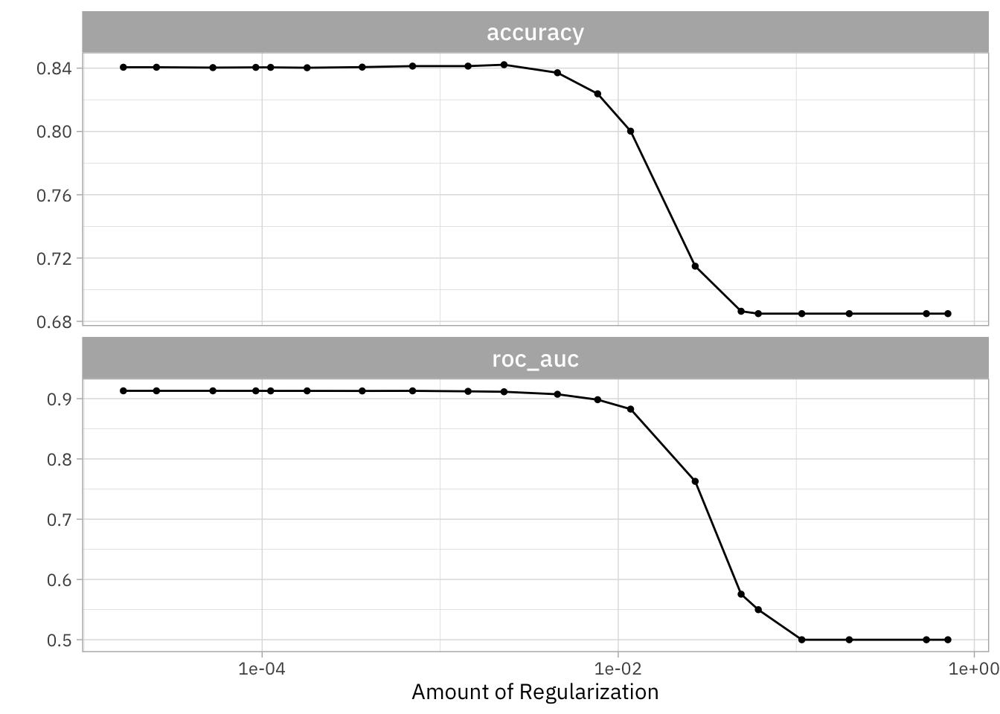

Text Mining
USING TIDY DATA PRINCIPLES
Hello!

Let’s install some packages
TEXT CLASSIFICATION
library(tidymodels)
#> ── Attaching packages ────────────────────────────────────── tidymodels 1.0.0 ──
#> ✔ broom 1.0.2 ✔ rsample 1.1.1
#> ✔ dials 1.1.0 ✔ tune 1.0.1
#> ✔ infer 1.0.4 ✔ workflows 1.1.2
#> ✔ modeldata 1.0.1 ✔ workflowsets 1.0.0
#> ✔ parsnip 1.0.3 ✔ yardstick 1.1.0
#> ✔ recipes 1.0.3
#> ── Conflicts ───────────────────────────────────────── tidymodels_conflicts() ──
#> ✖ scales::discard() masks purrr::discard()
#> ✖ dplyr::filter() masks stats::filter()
#> ✖ recipes::fixed() masks stringr::fixed()
#> ✖ dplyr::lag() masks stats::lag()
#> ✖ yardstick::spec() masks readr::spec()
#> ✖ recipes::step() masks stats::step()
#> • Use tidymodels_prefer() to resolve common conflicts.Learn more
Download your text data
library(tidyverse)
library(gutenbergr)
titles <- c("The War of the Worlds",
"Pride and Prejudice")
books <- gutenberg_works(title %in% titles) %>%
gutenberg_download(meta_fields = "title", mirror = my_mirror) %>%
mutate(title = str_replace_all(title, " ", "_")) %>%
filter(nchar(text) > 3) %>%
mutate(document = row_number())Download your text data
books
#> # A tibble: 16,846 × 4
#> gutenberg_id text title docum…¹
#> <int> <chr> <chr> <int>
#> 1 36 "cover " The_… 1
#> 2 36 "The War of the Worlds" The_… 2
#> 3 36 "by H. G. Wells" The_… 3
#> 4 36 " ‘But who shall dwell in these worlds if they … The_… 4
#> 5 36 " . . . Are we or they Lords of the World? . .… The_… 5
#> 6 36 " how are all things made for man?’" The_… 6
#> 7 36 " KEPLER (quoted in _The Anato… The_… 7
#> 8 36 "Contents" The_… 8
#> 9 36 " BOOK ONE.—THE COMING OF THE MARTIANS" The_… 9
#> 10 36 " I. THE EVE OF THE WAR." The_… 10
#> # … with 16,836 more rows, and abbreviated variable name ¹documentSPEND YOUR DATA BUDGET 💰
Spend your data budget
Spend your data budget
book_train <- training(book_split)
book_train
#> # A tibble: 12,633 × 4
#> gutenberg_id text title docum…¹
#> <int> <chr> <chr> <int>
#> 1 1342 " [Illustration:" Prid… 5310
#> 2 1342 " GEORGE ALLEN" Prid… 5311
#> 3 1342 " PUBLISHER" Prid… 5312
#> 4 1342 " LONDON" Prid… 5314
#> 5 1342 " RUSKIN HOUSE" Prid… 5315
#> 6 1342 " ]" Prid… 5316
#> 7 1342 " _Reading Jane’s Letters._ _C… Prid… 5318
#> 8 1342 " PRIDE." Prid… 5320
#> 9 1342 " and" Prid… 5321
#> 10 1342 " PREJUDICE" Prid… 5322
#> # … with 12,623 more rows, and abbreviated variable name ¹documentSpend your data budget
book_test <- testing(book_split)
book_test
#> # A tibble: 4,213 × 4
#> gutenberg_id text title docum…¹
#> <int> <chr> <chr> <int>
#> 1 36 " how are all things made for man?’" The_… 6
#> 2 36 "Contents" The_… 8
#> 3 36 " III. ON HORSELL COMMON." The_… 12
#> 4 36 " VI. THE HEAT-RAY IN THE CHOBHAM ROAD." The_… 15
#> 5 36 " XV. WHAT HAD HAPPENED IN SURREY." The_… 24
#> 6 36 " XVII. THE “THUNDER CHILD”." The_… 26
#> 7 36 " I. UNDER FOOT." The_… 28
#> 8 36 " IX. WRECKAGE." The_… 36
#> 9 36 "THE EVE OF THE WAR." The_… 40
#> 10 36 "the mental habits of those departed days. At mos… The_… 53
#> # … with 4,203 more rows, and abbreviated variable name ¹documentSpend your data budget
Jane wants to know…
Is the book_split object a tidy dataset?
- Yes ✅
- No 🚫
The test set is precious! 💎
Spend your data budget
set.seed(234)
book_folds <- vfold_cv(book_train, strata = title)
book_folds
#> # 10-fold cross-validation using stratification
#> # A tibble: 10 × 2
#> splits id
#> <list> <chr>
#> 1 <split [11368/1265]> Fold01
#> 2 <split [11369/1264]> Fold02
#> 3 <split [11370/1263]> Fold03
#> 4 <split [11370/1263]> Fold04
#> 5 <split [11370/1263]> Fold05
#> 6 <split [11370/1263]> Fold06
#> 7 <split [11370/1263]> Fold07
#> 8 <split [11370/1263]> Fold08
#> 9 <split [11370/1263]> Fold09
#> 10 <split [11370/1263]> Fold10CREATE YOUR MODEL ✨
Specify a model
Pick a model
Set the mode (if needed)
Set the engine
All available models are listed at https://tidymodels.org/find/parsnip
Specify a model
Specify a model
What do you predict will happen if we run the following code? 🤔
Specify a model
What do you predict will happen if we run the following code? 🤔
Specify a model
What do you predict will happen if we run the following code? 🤔
Specify a model
What do you predict will happen if we run the following code? 🤔
Specify a model
Jane wants to know…
Have we fit the lasso_spec model to our data yet?
- Yep 💃
- Not yet 🙅♀️
FEATURE ENGINEERING 🛠️
Illustration by Allison Horst
Specify a recipe
Start the recipe()
Define the variables
Describe preprocessing step-by-step
All available recipe steps are listed at https://www.tidymodels.org/find/recipes/
Preprocessing options️
Encode categorical predictors
Center and scale variables
Handle class imbalance
Impute missing data
Perform dimensionality reduction
A lot more!
Estimate using training data
Estimate using training data
What do you predict will happen if we run the following code? 🤔
Estimate using training data
What do you predict will happen if we run the following code? 🤔
Estimate using training data
What do you predict will happen if we run the following code? 🤔
Estimate using training data
Estimate using training data
Combine recipe and model
book_wf <- workflow(book_rec, lasso_spec)
book_wf
#> ══ Workflow ════════════════════════════════════════════════════════════════════
#> Preprocessor: Recipe
#> Model: logistic_reg()
#>
#> ── Preprocessor ────────────────────────────────────────────────────────────────
#> 4 Recipe Steps
#>
#> • step_tokenize()
#> • step_stopwords()
#> • step_tokenfilter()
#> • step_tfidf()
#>
#> ── Model ───────────────────────────────────────────────────────────────────────
#> Logistic Regression Model Specification (classification)
#>
#> Main Arguments:
#> penalty = tune()
#> mixture = 1
#>
#> Computational engine: glmnetTune model with resampled data
Tune model with resampled data
lasso_grid
#> # Tuning results
#> # 10-fold cross-validation using stratification
#> # A tibble: 10 × 4
#> splits id .metrics .notes
#> <list> <chr> <list> <list>
#> 1 <split [11368/1265]> Fold01 <tibble [40 × 5]> <tibble [0 × 3]>
#> 2 <split [11369/1264]> Fold02 <tibble [40 × 5]> <tibble [0 × 3]>
#> 3 <split [11370/1263]> Fold03 <tibble [40 × 5]> <tibble [0 × 3]>
#> 4 <split [11370/1263]> Fold04 <tibble [40 × 5]> <tibble [0 × 3]>
#> 5 <split [11370/1263]> Fold05 <tibble [40 × 5]> <tibble [0 × 3]>
#> 6 <split [11370/1263]> Fold06 <tibble [40 × 5]> <tibble [0 × 3]>
#> 7 <split [11370/1263]> Fold07 <tibble [40 × 5]> <tibble [0 × 3]>
#> 8 <split [11370/1263]> Fold08 <tibble [40 × 5]> <tibble [0 × 3]>
#> 9 <split [11370/1263]> Fold09 <tibble [40 × 5]> <tibble [0 × 3]>
#> 10 <split [11370/1263]> Fold10 <tibble [40 × 5]> <tibble [0 × 3]>Evaluate models
show_best(lasso_grid)
#> # A tibble: 5 × 7
#> penalty .metric .estimator mean n std_err .config
#> <dbl> <chr> <chr> <dbl> <int> <dbl> <chr>
#> 1 0.0000166 roc_auc binary 0.913 10 0.00229 Preprocessor1_Model01
#> 2 0.0000255 roc_auc binary 0.913 10 0.00229 Preprocessor1_Model02
#> 3 0.0000529 roc_auc binary 0.913 10 0.00231 Preprocessor1_Model03
#> 4 0.000700 roc_auc binary 0.913 10 0.00236 Preprocessor1_Model08
#> 5 0.0000921 roc_auc binary 0.913 10 0.00232 Preprocessor1_Model04Evaluate models
Finalize and fit workflow
simple_lasso <- select_by_one_std_err(
lasso_grid,
-penalty,
metric = "roc_auc"
)
simple_lasso
#> # A tibble: 1 × 9
#> penalty .metric .estimator mean n std_err .config .best .bound
#> <dbl> <chr> <chr> <dbl> <int> <dbl> <chr> <dbl> <dbl>
#> 1 0.00228 roc_auc binary 0.911 10 0.00229 Preprocessor1_Mod… 0.913 0.911Finalize and fit workflow
Evaluate final model
collect_predictions(book_final)
#> # A tibble: 4,213 × 7
#> id .pred_Pride_and_Prejud…¹ .pred…² .row .pred…³ title .config
#> <chr> <dbl> <dbl> <int> <fct> <fct> <chr>
#> 1 train/test split 0.269 0.731 6 The_Wa… The_… Prepro…
#> 2 train/test split 0.657 0.343 8 Pride_… The_… Prepro…
#> 3 train/test split 0.111 0.889 12 The_Wa… The_… Prepro…
#> 4 train/test split 0.0112 0.989 15 The_Wa… The_… Prepro…
#> 5 train/test split 0.607 0.393 24 Pride_… The_… Prepro…
#> 6 train/test split 0.657 0.343 26 Pride_… The_… Prepro…
#> 7 train/test split 0.657 0.343 28 Pride_… The_… Prepro…
#> 8 train/test split 0.657 0.343 36 Pride_… The_… Prepro…
#> 9 train/test split 0.657 0.343 40 Pride_… The_… Prepro…
#> 10 train/test split 0.0752 0.925 53 The_Wa… The_… Prepro…
#> # … with 4,203 more rows, and abbreviated variable names
#> # ¹.pred_Pride_and_Prejudice, ².pred_The_War_of_the_Worlds, ³.pred_classEvaluate final model
Evaluate final model
Jane wants to know…
Is this the ROC curve for the training or testing data?
- Training
- Testing
Variable importance
library(vip)
book_vip <-
extract_fit_engine(book_final) %>%
vi()
book_vip
#> # A tibble: 500 × 3
#> Variable Importance Sign
#> <chr> <dbl> <chr>
#> 1 tfidf_text_elizabeth 10.2 NEG
#> 2 tfidf_text_mr 8.25 NEG
#> 3 tfidf_text_bennet 7.73 NEG
#> 4 tfidf_text_martians 7.45 POS
#> 5 tfidf_text_jane 7.01 NEG
#> 6 tfidf_text_bingley 6.92 NEG
#> 7 tfidf_text_darcy 6.89 NEG
#> 8 tfidf_text_wickham 6.44 NEG
#> 9 tfidf_text_father 6.00 NEG
#> 10 tfidf_text_longbourn 5.78 NEG
#> # … with 490 more rowsVariable importance
Jane wants to know…
Text classification is an example of…
- supervised machine learning
- unsupervised machine learning
Go explore real-world text!
Thanks!
Slides created with Quarto